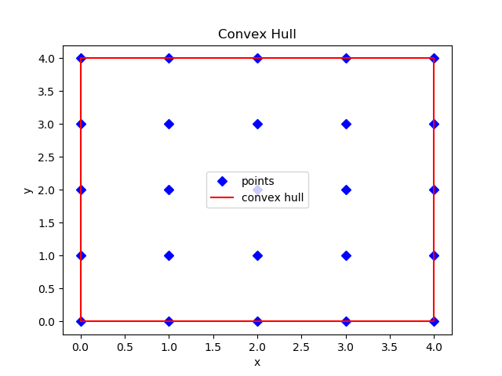

https://matplotlib.org/stable/api/_as_gen/matplotlib.pyplot.plot.html
Plot y versus x as lines and/or markers.
# matplotlib.pyplot.plot(*args, scalex=True, scaley=True, data=None, **kwargs) # # Call signatures: # plot([x], y, [fmt], *, data=None, **kwargs) # plot([x], y, [fmt], [x2], y2, [fmt2], ..., **kwargs) # # x, y : array-like or scalar # fmt : str, optional # scalex, scaley : bool, default: True # These parameters determine if the view limits are adapted to the data limits. # data : indexable object with labelled data # Returns a list of Line2D objects representing the plotted data.
# Format strings: # fmt = '[marker][line][color]' # fmt = '[color][marker][line]' # Basic formatting: plt.plot(x, y, 'r-') # red solid line and no marker plt.plot(x, y, color="red", linestyle="solid") # red solid line and no marker plt.plot(x, y, 'bo') # blue circle and no line plt.plot(x, y, color="blue", marker="o", linestyle="None") # blue circle and no line plt.plot(x, y, 'g^:') # green triangle and dotted line plt.plot(x, y, 'cs--') # cyan square and dashed line plt.plot(x, y, 'kD-') # black diamond and solid line
# The supported color abbreviations are the single letter codes. # character color keyword 'b' blue color="blue" 'g' green color="green" 'r' red color="red" 'c' cyan color="cyan" 'm' magenta color="magenta" 'y' yellow color="yellow" 'k' black color="black" 'w' white color="white"
# Line styles. # characters description keyword '-' solid line style linestyle="solid" '--' dashed line style linestyle="dashed" '-.' dash-dot line style linestyle="dashdot" ':' dotted line style linestyle="dotted"
# Selected keywords. # When conflicting with fmt, keyword arguments take precedence. color='yellow' linestyle="solid" # ls="solid" linewidth=2.0 # float, lw=2.0 marker='o' markersize=12 # float markerfacecolor='r' markeredgewidth=2 # float label='line 1' # for legends
https://matplotlib.org/stable/api/markers_api.html
# Selected markers (keyword marker). marker="." # point marker="o" # circle marker="v" # triangle_down marker="^" # triangle_up marker="<" # triangle_left marker=">" # triangle_right marker="s" # square marker="D" # diamond marker="d" # thin_diamond marker="*" # star marker="+" # plus marker="x" # x marker="|" # vline marker="_" # hline
# ch.py
import matplotlib.pyplot as plt
s = 5
all_points = [(i, j) for i in range(s) for j in range(s)]
convex_hull = [(0, 0), (s-1, 0), (s-1, s-1), (0, s-1)] # counterclockwise
convex_hull.append(convex_hull[0]) # closing a polygon
x = [p[0] for p in all_points]
y = [p[1] for p in all_points]
plt.plot(x, y, 'bD', label="points")
hx = [p[0] for p in convex_hull]
hy = [p[1] for p in convex_hull]
plt.plot(hx, hy, 'r-', label="convex hull")
plt.title("Convex Hull")
plt.xlabel("x")
plt.ylabel("y")
plt.legend() # using labels
plt.show()
